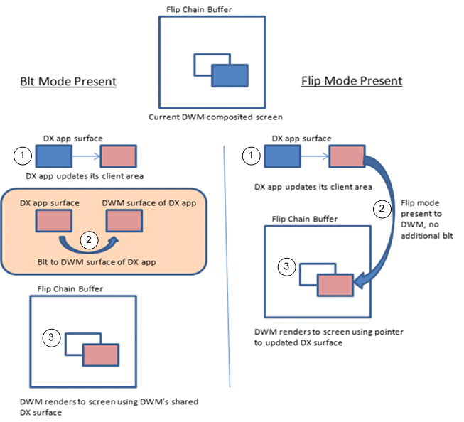

Windows 8 adds support for flip presentation model and its associated present statistics in DXGI 1.2. Windows 8’s DXGI flip presentation model is similar to Windows 7’s Direct3D 9EX Flip Mode Presentation. Video or frame rate-based presentation apps such as games can benefit most by using flip presentation model. Apps that use DXGI flip presentation model reduce the system resource load and increase performance. Apps can also use present statistics enhancements with flip presentation model to better control the rate of presentation by providing real-time feedback and correction mechanisms.
The runtime uses the bit-block transfer (bitblt) and flip presentation models to present graphics content on display monitors. The biggest difference between bitblt and flip presentation models is how back-buffer contents get to the Windows 8 DWM for composition. In the bitblt model, contents of the back buffer are copied into the redirection surface on each call to IDXGISwapChain1::Present1. In the flip model, all back buffers are shared with the Desktop Window Manager (DWM). Therefore, the DWM can compose straight from those back buffers without any additional copy operations. In general, the flip model is more efficient. The flip model also provides more features, such as enhanced present statistics.
If you have legacy components that use Windows Graphics Device Interface (GDI) to write to an HWND directly, use the bitblt model.
Performance improvements of DXGI flip model are significant when the app is in windowed mode. The sequence in this table and the illustration compare memory bandwidth usages and system reads and writes of windowed apps that choose flip model versus the bitblt model.
| Step | BitBlt model present to DWM | DXGI flip model present to DWM |
|---|---|---|
| 1. | The app updates its frame (Write) | The app updates its frame (Write) |
| 2. | Direct3D runtime copies surface contents to a DWM redirection surface (Read, Write) | Direct3D runtime passes the app surface to DWM |
| 3. | After the shared surface copy completes, DWM renders the app surface onto screen (Read, Write) | DWM renders the app surface onto screen (Read, Write) |
Â

Flip model reduces system memory usage by reducing the number of reads and writes by the Direct3D runtime for the windowed frame composition by DWM.
Direct3D 11.1 apps that target Windows 8 use flip model by creating the swap chain with the DXGI_SWAP_EFFECT_FLIP_SEQUENTIAL enumeration value set in the SwapEffect member of the DXGI_SWAP_CHAIN_DESC1 structure. When you set SwapEffect to DXGI_SWAP_EFFECT_FLIP_SEQUENTIAL, also set these members of DXGI_SWAP_CHAIN_DESC1 to the indicated values:
If you use DXGI_SWAP_EFFECT_FLIP_SEQUENTIAL on Windows 7 or earlier operating system, device creation fails. When you use flip model, you can use full-screen present statistics in windowed mode. Full-screen behavior is not affected. If you pass NULL to the pFullscreenDesc parameter of IDXGIFactory2::CreateSwapChainForHwnd for a windowed swap chain and set SwapEffect to DXGI_SWAP_EFFECT_FLIP_SEQUENTIAL, the runtime creates one extra back buffer and rotates whichever handle belongs to the buffer that becomes the front buffer at presentation time.
When you use flip model, consider these tips:
Present statistics are frame-timing information that media apps use to synchronize video and audio streams and recover from video playback glitches. Apps can use the frame-timing information in present statistics to adjust the presentation rate of their video frames for smoother presentation. To obtain present statistics information, call the IDXGISwapChain::GetFrameStatistics method to obtain the DXGI_FRAME_STATISTICS structure. DXGI_FRAME_STATISTICS contains statistics about IDXGISwapChain1::Present1 calls. A flip model swap chain provides present statistics information in both windowed and full-screen modes. For bitblt model swap chains in windowed mode, all DXGI_FRAME_STATISTICS values are zeroes.
For flip model present statistics, IDXGISwapChain::GetFrameStatistics returns DXGI_ERROR_FRAME_STATISTICS_DISJOINT in these situations:
The values in PresentRefreshCount, SyncRefreshCount, and SyncQPCTime members of DXGI_FRAME_STATISTICS have the following characteristics:
The IDXGISwapChain::GetLastPresentCount method returns the last present count, that is, the present ID of the last successful IDXGISwapChain1::Present1 call made by a display device that is associated with the swap chain. This present ID is the value of the PresentCount member of the DXGI_FRAME_STATISTICS structure. For bitblt model swap chains, while in windowed mode, all DXGI_FRAME_STATISTICS values are zeroes.
Perform these steps to avoid, detect, and recover from glitches in frame presentation:
Queue IDXGISwapChain1::Present1 calls (that is, call IDXGISwapChain1::Present1 multiple times, which causes them to collect in a queue).
Create a present-queue structure to store all successfully submitted IDXGISwapChain1::Present1's present ID (returned by IDXGISwapChain::GetLastPresentCount) and associated, calculated/expected PresentRefreshCount values.
To detect a glitch:
To recover from the glitch:
Calculate the number of frames to skip to recover from the glitch. For example, if step 3 reveals that the expected vsync count (PresentRefreshCount) for a present ID (PresentCount) is 5 and the actual vsync count for the present ID is 8, the number of frames to skip to recover from the glitch is 3 frames.
Pass 0 to the SyncInterval parameter in this number of calls to IDXGISwapChain1::Present1 to discard and skip this number of frames.
[!Note]
If the glitch consists of a large number of frames, call IDXGISwapChain1::Present1 with the Flags parameter set to DXGI_PRESENT_RESTART to discard and skip all outstanding queued presents.
Â
Here is an example scenario of recovering from glitches in frame presentation:
In the example scenario, you expect frame A to go on screen on a vsync count of 1. But you actually detect the vsync count that frame A appears on screen as 4. Therefore, you determine that a glitch occurred. You can then discard 3 frames, that is, you can pass 0 to the SyncInterval parameter in 3 calls to IDXGISwapChain1::Present1. In the preceding example scenario, to recover from the glitch, you need a total of 8 IDXGISwapChain1::Present1 calls. The 9th frame is then visible as per the vsync count that you expect.
Here's a time line of presentation events. Each vertical line represents a vsync. The horizontal direction is time, which increases to the right. You can use the figure to imagine how glitches can occur.
The figure illustrates this sequence:
The app wakes up on vsync, renders blue, calls IDXGISwapChain1::Present1, and then goes back to sleep.
The graphics processing unit (GPU) wakes up from idle, performs the render to blue, and then goes back to sleep.
The DWM wakes up at the next vsync, composes blue into its back buffer, calls IDXGISwapChain1::Present1, and then goes back to sleep.
The app wakes up, renders green, calls IDXGISwapChain1::Present1, and then goes back to sleep.
[!Note]
The app concurrently executes while the GPU performs the compose of blue.
Â
Next, the GPU renders green for the app.
Finally, the digital to analog converter (DAC) shows results of the DWM composition on the monitor on the next vsync.
From the time line, you can imagine the latency of present statistics and how glitches can occur. For example, to show a DWM glitch for the green color appearing on screen, imagine widening the green/red box so that the right side of the green/red box matches up to the right side of the purple/red box. In this scenario, the DAC shows two frames of blue and then the green frame. You can see that this glitch occurred from reading present statistics.
Enhancing presentation with the flip model, dirty rectangles, and scrolled areas
Â
Â